Every complaint now goes straight to one named officer, a woman officer first and a child-trained officer for a child. That officer works the whole case from a case number and "Survivor A". She calls through a masked number, opens one identity detail for one task for 60 seconds under a watermark, and loses all identity access when she files the final report.
Allocation
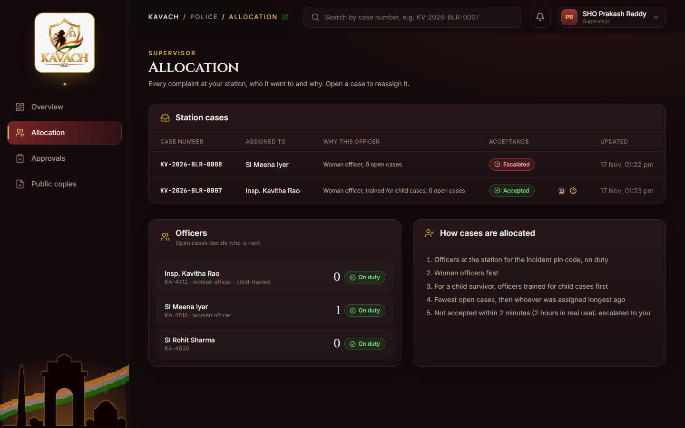
| # | Rule, in order |
|---|---|
| 1 | Officers at the station chosen from the incident pin code, on duty and not locked |
| 2 | Women officers first (anyone on duty only if no woman officer is) |
| 3 | For a child survivor, officers trained for child cases first |
| 4 | Fewest open cases, then whoever was assigned longest ago |
| 5 | Not accepted within 2 minutes in the demo (2 hours in real use): escalated to the supervisor, who can reassign with a reason |
The officer's view
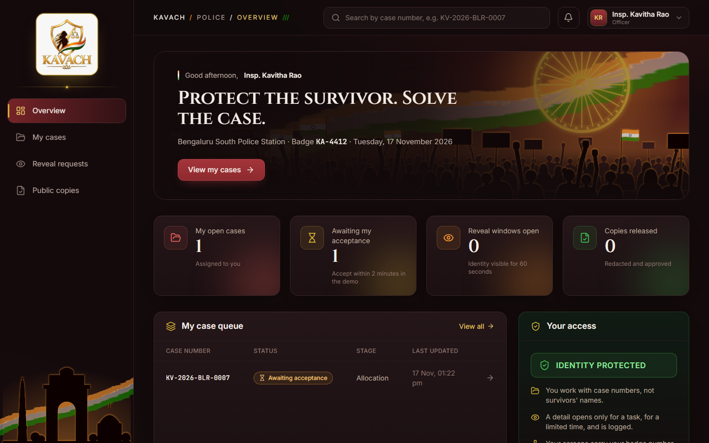
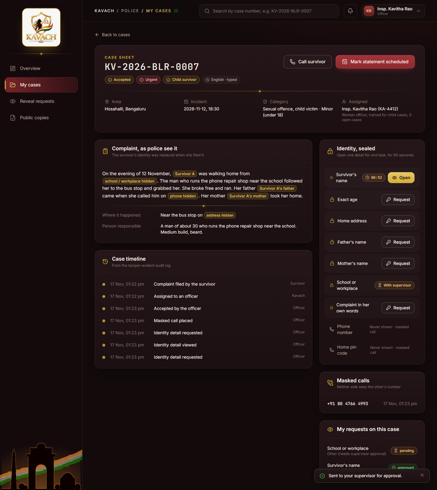
Opening one detail
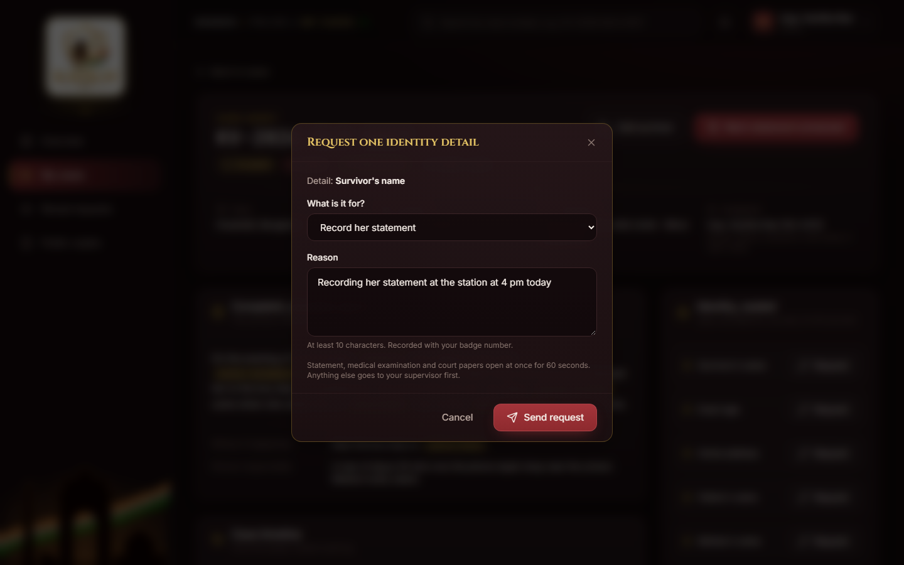
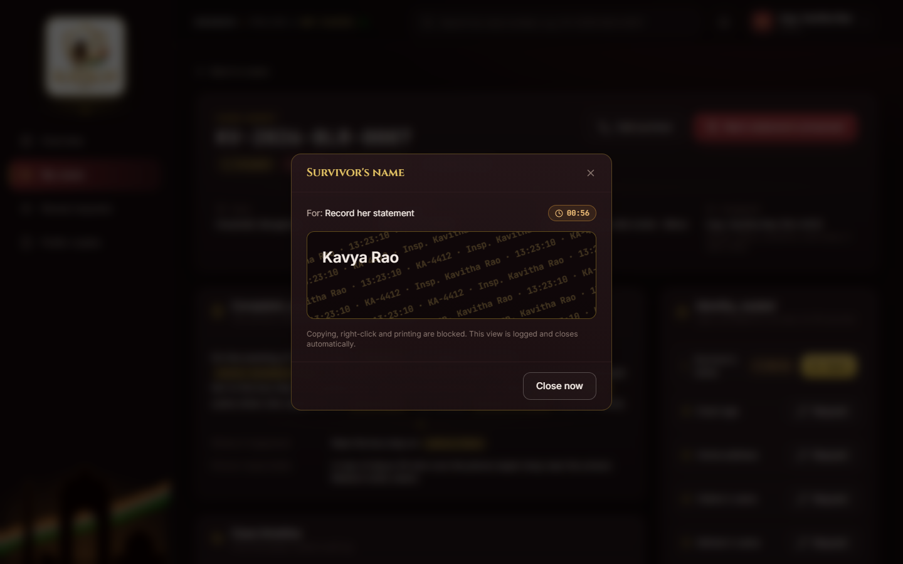
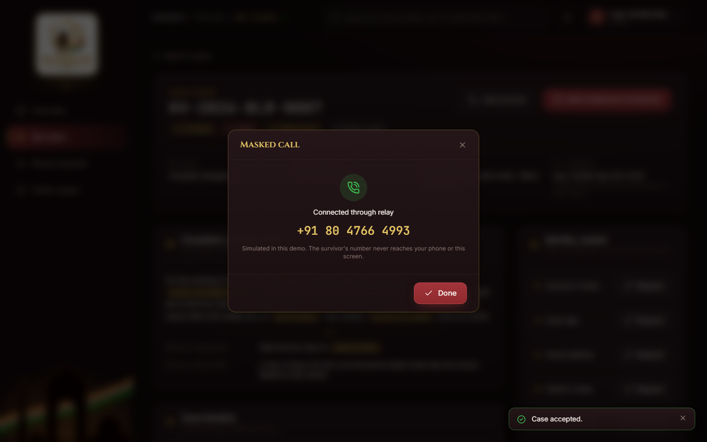
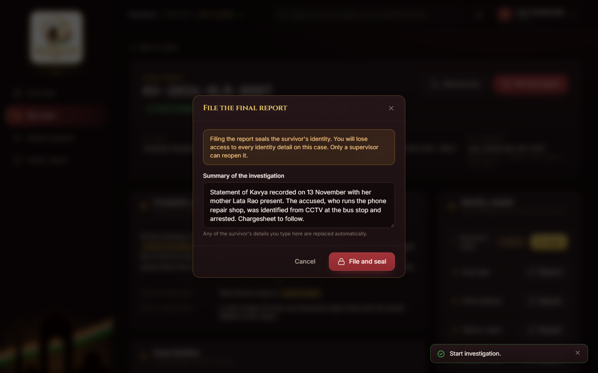
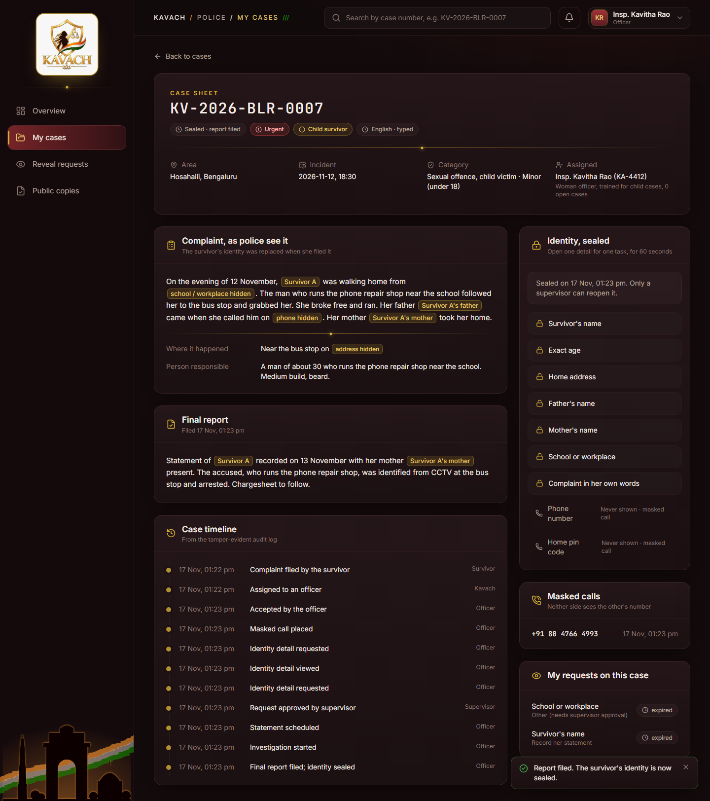
The supervisor's view
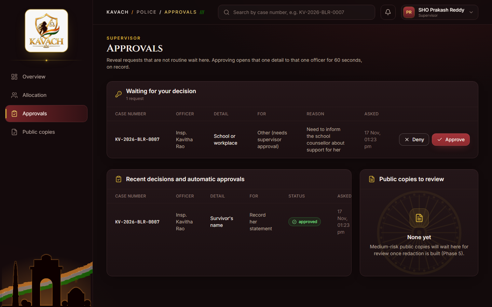
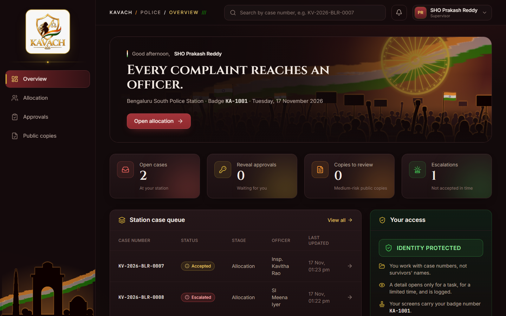
Access isolation and the survivor's side
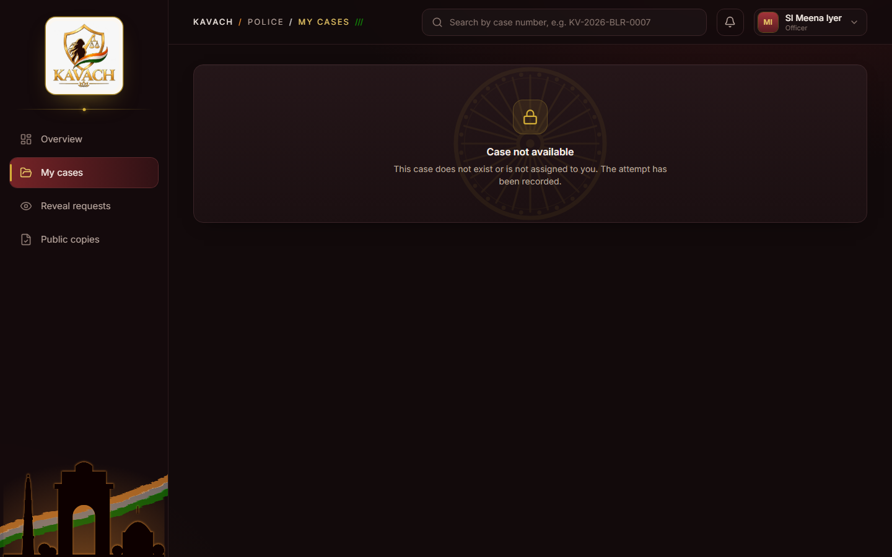
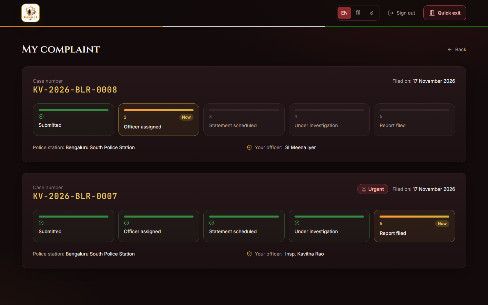
Checks run (API, 30 of 30 passed)
| Area | What was checked | Status |
|---|---|---|
| Allocation | Child case to the child-trained woman officer; adult case to the woman officer with fewer open cases; survivor sees "Officer assigned" | Pass |
| No identity in police views | Case list and case sheet contain none of her name, father's name, phone, street or school | Pass |
| Access isolation | Another officer at the same station, an officer at another station, and a decoy case number all get "not found"; the security admin cannot open case sheets; each denial is logged | Pass |
| Accepting and order | No reveals before accepting; stages cannot be skipped | Pass |
| Masked call | Relay number returned; phone can never be revealed | Pass |
| Reveals | Routine task opens at once; other tasks wait for the supervisor; only the requesting officer can read it; an expired reveal can no longer be read | Pass |
| Seal on submission | Final report seals the case, closes open reveals, blocks new ones, and the report text is cleaned of her identity | Pass |
| Supervisor powers | Approve a reveal, reopen a sealed case, reassign with a reason; access moves to the new officer | Pass |
| Escalation | A case not accepted in time counts as escalated | Pass |
Also checked in the browser: the full officer, supervisor and survivor flows above, run end to end by script. Fixed along the way: case numbers wrapping in the allocation table, request buttons still shown on a sealed case, a doubled icon, and unlabelled system events in the timeline.
Not done yet, and limits
- Calls are simulated; a real deployment needs a telephony provider for number masking.
- The watermark is visible on screen; invisible per-officer marks in exported files are not part of the plan's 90 minutes.
- Blocking copy and print stops casual leaks, not a phone camera; the watermark is what traces those.
- Escalation is checked whenever police screens load rather than by a background timer.
- Wrong-case attempts are only logged for now; Phase 6 turns them, and any decoy access, into alerts and lock-outs.
- Public copies and their approvals arrive in Phase 5.
Next: Phase 5, redaction engine and public copy
The six redaction layers (tagged fields, patterns, places and schools in three languages, relation chains, risk score, rebuild from clean text), a side-by-side of name-only redaction against Kavach's, the risk-based release gate, and a printable public copy with no hidden text or metadata.